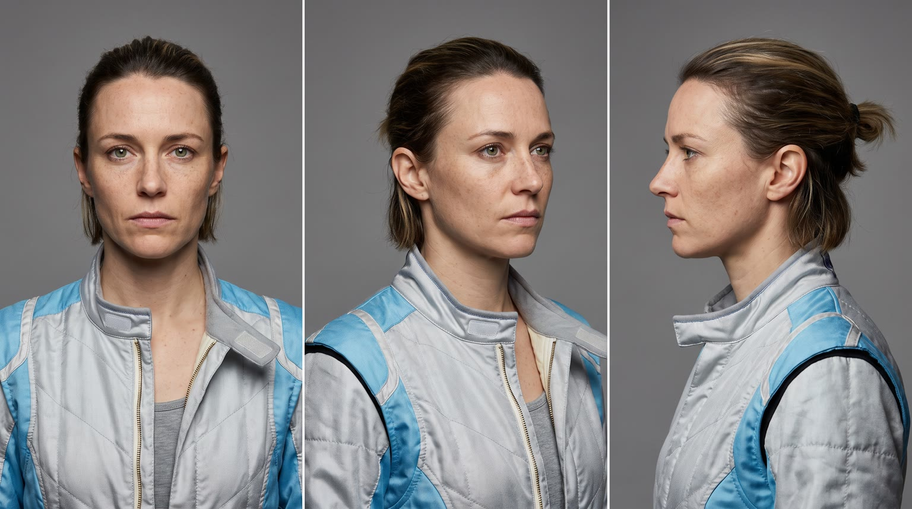
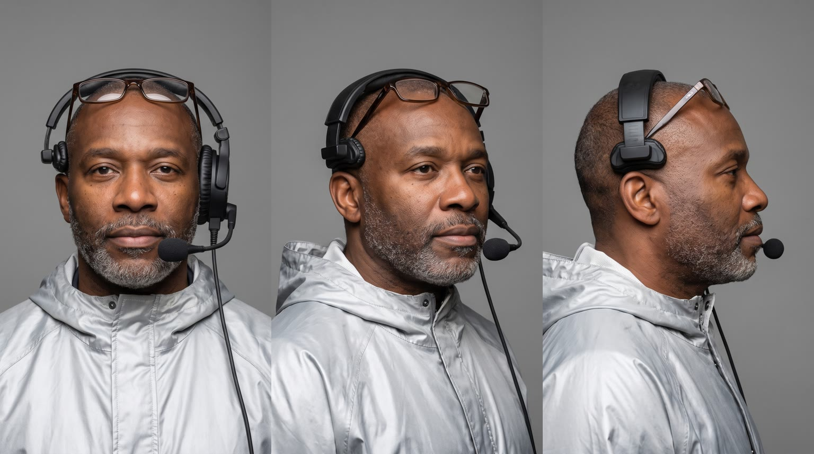
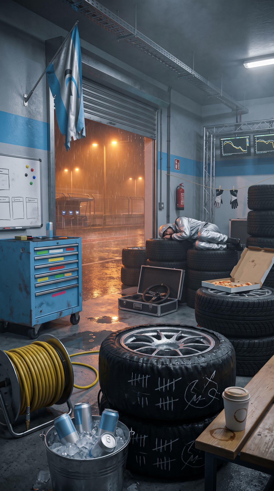
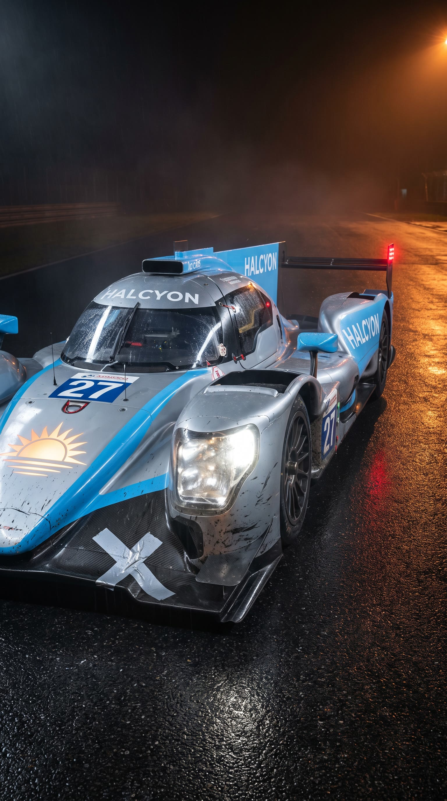
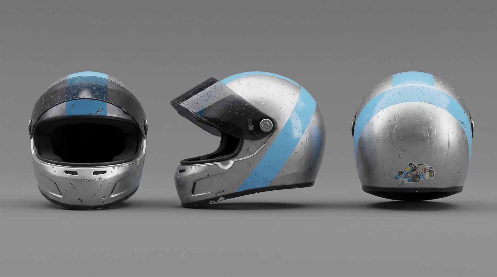
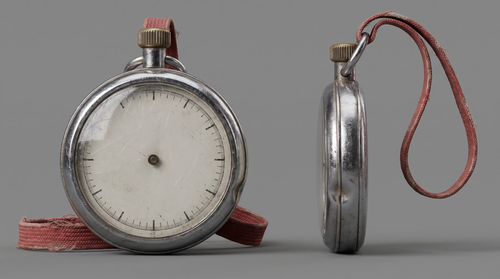
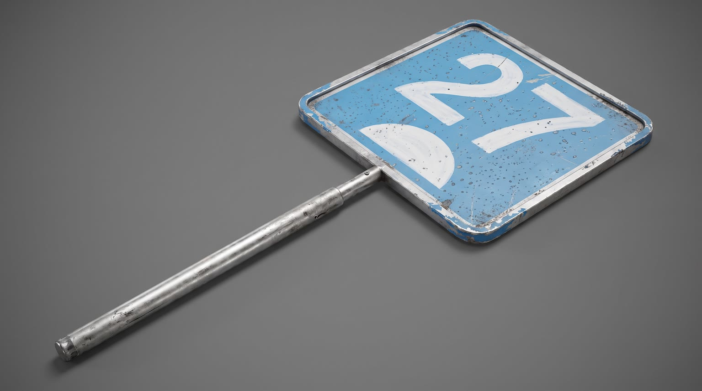

All templates · template.json · original storyboard
Cinematic micro moviecinematic-01-night-stintNight Stint
Hour 19 of a 24 hour endurance race, 3am and raining. A driver has four minutes before her car comes in; the one ritual she never skips is {{product.name}}.
Fit by product type
| ingested | great | a pre-stint drink or snack is a natural ritual |
| applied | great | pre-helmet skincare, balm or sunscreen at the garage mirror |
| worn | good | base layers, socks, glasses, watches and gloves fit the kit |
| handheld | good | earbuds, bottles, trackers and gadgets in her hands while she waits |
| carried | good | bags and cases at her chair |
| home | stretch | the beat moves to the drivers' room; works for pillows, lamps, blankets, chairs, not for large furniture |
| consumable | good | refills and packs on the tool cart |
Refuses: products for children; alcohol; anything unsafe to use right before driving (sleep aids, sedatives)
Cast, world and props (shipped with the template)







- Halcyon Racing is an 11-person privateer team running a two-year-old car against factory teams. They have never finished on the podium at Vallon.
- Jess is the team's third driver and its rookie, so she gets the night stints nobody wants. She drives with her late father's old analog stopwatch on a lanyard; he ran a small kart track in Ohio.
- Ray has run pit walls for 30 years. He carries a dented steel thermos he never seems to drink from and keeps a pencil behind his ear.
- It has rained since hour 14. The crew sleep in 20 minute shifts on the tyre stacks.
Script: what each line must do
Right column is the worked example for Red Bull Sugarfree.
| Time | Speaker | Intent (template) | Example |
|---|---|---|---|
| 0.6-2.8 | jess | Fixed: Hour nineteen. This is where races are lost. Max 10 words. Delivery: quiet, certain, almost to herself | Hour nineteen. This is where races are lost. |
| 4.6-6.4 | ray | Fixed: Car's in four minutes. You good? Max 8 words. Delivery: gentle, gravelly, checking on her | Car's in four minutes. You good? |
| 7.0-7.9 | jess | Fixed: Give me one minute. Max 6 words. Delivery: calm, already reaching for something | Give me one minute. |
| 10.8-13.6 | jess | Product line: say {{product.name}} (or its short spoken form) and the ONE benefit from product.benefits that matters most at 3am before a stint (focus, comfort, protection, calm, grip, warmth...). benefit comes only from product.benefits, reworded no further than person and tense; brand spelled phonetically in the video prompt using product.phonetic Max 9 words. Delivery: low and satisfied after the product moment, a small smile | Red Bull Sugarfree. Keeps me sharp, no sugar. |
| 18.0-19.6 | ray (off camera) | Fixed: Gap's two seconds. Go get him. Max 8 words. Delivery: radio crackle, urgent but steady | Gap's two seconds. Go get him. |
| 24.6-25.4 | jess | Fixed: Got him. Max 4 words. Delivery: breathless, under her breath, inside the helmet | Got him. |
| 27.6-29.6 | jess (off camera) | Tagline: product.tagline if the page has one, otherwise a 3 to 5 word line that ties the product to finishing strong. Max 6 words. Delivery: warm voiceover, unhurried | Wiiings without sugar. |
Product-adjacent props by type
| ingested | a steel ice bucket of crushed ice beside her chair, holding the product chilled |
| applied | her open kit bag on the tool cart with the product on top |
| worn | her kit bag on the tool cart with the product folded or set on top |
| handheld | the tool cart beside her chair with the product next to her gloves |
| carried | the product hanging from the back of her folding chair |
| home | the small drivers' room behind the garage, where the product is set up |
| consumable | a pack of the product on the tool cart beside her chair |
Shots and how the product appears for each type
S01 · 0 to 2.9 s · absent
Jess's green eyes in the open helmet visor, rain-light reflections sliding across the visor, the orange glow of the pit lane behind.
S02 · 2.9 to 4.4 s · absent
The garage at 3am: two crew members asleep on stacked tyres, rain sheeting past the open shutter, a timing screen glowing with abstract graphs.
S03 · 4.4 to 6.6 s · absent
Ray leans in the doorway of the drivers' corner, headset on, glasses on his head, and checks on her.
S04 · 6.6 to 8.2 s · reveal
Jess on a folding chair, helmet on her knee, answers without looking up and goes for her ritual: the product.
| ingested | reaching with one hand toward a steel ice bucket where {{product.visual}} sits chilled in crushed ice |
| applied | reaching toward her open kit bag on the tool cart where {{product.visual}} sits on top |
| worn | reaching toward her kit bag on the tool cart where {{product.visual}} is set out on top |
| handheld | reaching toward the tool cart where {{product.visual}} sits beside her gloves |
| carried | reaching back for {{product.visual}} hanging from the back of her chair |
| home | standing up and turning toward the doorway of the small drivers' room behind the garage, where {{product.visual}} is set up |
| consumable | reaching toward the tool cart where a pack of {{product.visual}} sits |
S05 · 8.2 to 10.4 s · hero
Macro insert: her hand brings the product into the light.
| ingested | a woman's hand with short nails lifting {{product.visual}} out of crushed ice, label to camera, cold droplets running down it |
| applied | a woman's hand with short nails taking {{product.visual}} from the kit bag and opening it, label to camera |
| worn | a woman's hand with short nails picking up {{product.visual}} from the kit bag, turning it once so its details catch the light |
| handheld | a woman's hand with short nails picking up {{product.visual}} from the tool cart, label or logo to camera |
| carried | a woman's hand with short nails unclipping {{product.visual}} from the chair back, logo to camera |
| home | a woman's hand with short nails switching on or touching {{product.visual}} in the dim drivers' room, the product lit as the brightest thing in the frame |
| consumable | a woman's hand with short nails taking one {{product.visual}} from its pack, label to camera |
S06 · 10.4 to 13.8 s · in_use
She uses the product, then says the product line with a small smile.
| ingested | holding {{product.visual}} at chest height with the label readable, just lowered from a sip, a small satisfied smile |
| applied | applying {{product.visual}} in a small mirror clipped to the tool cart, then holding it at chest height with the label readable, a small satisfied smile |
| worn | wearing {{product.visual}}, adjusting it once, a small satisfied smile |
| handheld | using {{product.visual}} for a moment, then holding it at chest height with the logo readable, a small satisfied smile |
| carried | slinging or pocketing {{product.visual}} with one practised move, a small satisfied smile |
| home | settling into or beside {{product.visual}} in the drivers' room for sixty seconds of calm, eyes closing briefly, a small satisfied smile |
| consumable | using one {{product.visual}} with a practised motion, then holding the pack at chest height with the label readable, a small satisfied smile |
S07 · 13.8 to 16.6 s · absent
The #27 car brakes head-on toward camera into the pit box in the rain, headlights flaring; crew rush in from both sides.
S08 · 16.6 to 19.8 s · absent
Jess drops into the cockpit, belts snap, visor down; the car leaves the pit lane into the dark.
S09 · 19.8 to 25.6 s · absent
Onboard into a hairpin as dawn breaks, the #27 dives inside a dark rival car and passes it.
S10 · 25.6 to 30 s · hero
Sunrise over the pit wall; the product sits there as the #27 passes in the background. Tagline and pack shot.
| ingested | {{product.visual}} standing upright on the wet concrete pit wall, label to camera, droplets on it |
| applied | {{product.visual}} standing upright on the wet concrete pit wall, label to camera |
| worn | {{product.visual}} laid neatly on the wet concrete pit wall, its best side to camera |
| handheld | {{product.visual}} resting on the wet concrete pit wall, logo to camera |
| carried | {{product.visual}} resting on the wet concrete pit wall, logo to camera |
| home | {{product.visual}} in the drivers' room, its window framing the sunrise and the car passing on the track outside |
| consumable | the pack of {{product.visual}} standing upright on the wet concrete pit wall, label to camera |
Generation units (templated prompts)
U1 · 9 s
9:16 cinematic night scene in a racing team garage during a 24 hour race, heavy rain, orange pit lights, cool blue ambient light, 35mm grain. Shot 1 (0 to 3 s): extreme close-up of @Image1 (Jess) in an open helmet, visor lifted, she says quietly to herself: "Hour nineteen. This is where races are lost." Shot 2 (3 to 4.5 s): wide shot of the garage, two crew asleep on tyre stacks, rain past the open shutter. Shot 3 (4.5 to 6.6 s): @Image2 (Ray) leans in the doorway with a headset, gently: "Car's in four minutes. You good?" Shot 4 (6.6 to 9 s): Jess on a folding chair, helmet on her knee, calm, {{action.S04}}: "Give me one minute." Native sound: rain on the roof, monitor hum, ice shifting. No music. No text on screen. No logos except the fictional HALCYON.U2 · 6 s · exact-risk
9:16 cinematic. Shot 1 (0 to 2.2 s): locked macro insert, {{action.S05}}; the product matches @Image1 exactly, undistorted. Shot 2 (2.2 to 6 s): close-up of @Image2 (Jess) in the garage at night, {{action.S06}}, and says low and satisfied: "{{line.L4}}" (say the brand as {{product.phonetic}}). Keep the product's shape, colours and label exactly as @Image1. Native sound: rain, the product's own sound (a click, a snap, a pour, a rustle) if it has one. No music.U3 · 12 s
9:16 cinematic racing sequence, rain turning to first light. Shot 1 (0 to 3 s): low handheld wide, the silver and sky-blue number 27 prototype from @Image1 slides into its pit box from left to right, spray and sparks, crew rush in with wheel guns. Shot 2 (3 to 6 s): over the cockpit edge, @Image2 (Jess) in a closed helmet pulls her harness tight; a radio voice, crackly and steady: "Gap's two seconds. Go get him." The car pulls away down the pit lane. Shot 3 (6 to 12 s): onboard from behind the driver braking into a wet hairpin at dawn, the car dives inside a dark grey rival prototype with no logos and passes it; Jess, breathless inside the helmet: "Got him." Cars move forward in their direction of travel, no spins, no sliding sideways. Native sound: engines, downshifts, air guns, radio. No music.
U4 · 5 s · exact-risk
9:16 premium pack shot at sunrise. Slow crane down onto {{action.S10}}; the product matches @Image1 exactly and does not move or change. A blurred silver and sky-blue race car passes on the track behind, mountains and pink dawn sky. Keep empty space above the product. Native sound: the car passing, morning birds. No music, no text.